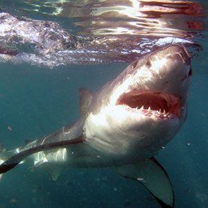

Haai

De haaien (Selachimorpha, ook wel Euselachii) behoren tot de kraakbeenvissen. De oudste bekende fossielen van haaien dateren van meer dan 425 tot 455 miljoen jaar geleden.[1] Er zijn meer dan 1000 soorten beschreven kraakbeenvissen, waaronder ongeveer 400 soorten haaien en 600 soorten roggen en pijlstaartroggen en ongeveer 30 soorten holocephali (draakvissen en chimeren, meestal diepzeevissen waarover vaak nog weinig bekend is).[2][3] Haaien zijn bij het grote publiek vooral bekend door de (voor de mens) gevaarlijke soorten, maar van de ongeveer 400 soorten zijn slechts vier of vijf soorten als gevaarlijk aan te merken. De meeste haaien zijn slanke, gespierde en snelle dieren die een lengte bereiken van rond de 1 à 2 meter. Het zijn bijna allemaal predatoren (roofvissen) die leven van gewervelde dieren (meestal vissen maar ook zeezoogdieren en vogels), grote kreeftachtigen en weekdieren (macrofauna). De kop van een haai is groot en kegelvormig, de kop bevat kleine ogen aan de zijkant en neusgaten vooraan boven op de snuit. Langs de kaakrand bevinden zich een of meer rijen sterke zaagtanden met aan de binnenzijde van de kaak nog vele rijen reservetanden. Omdat de tanden regelmatig worden verloren en vervangen door de reservetanden zijn deze altijd vlijmscherp. Aan weerszijden van de kop bevinden zich meestal 5 kieuwspleten, zelden 6 of 7. Hiermee filtert de haai zuurstof uit het water. Het is waar dat veel haaien moeten blijven zwemmen om zich continu van genoeg zuurstof te voorzien, maar er zijn ook soorten die de bek regelmatig open en dicht doen waardoor er ook water langs de kieuwen wordt gevoerd. Hierdoor kunnen ze toch zuurstof opnemen terwijl ze niet bewegen.
Bron: Wikipedia